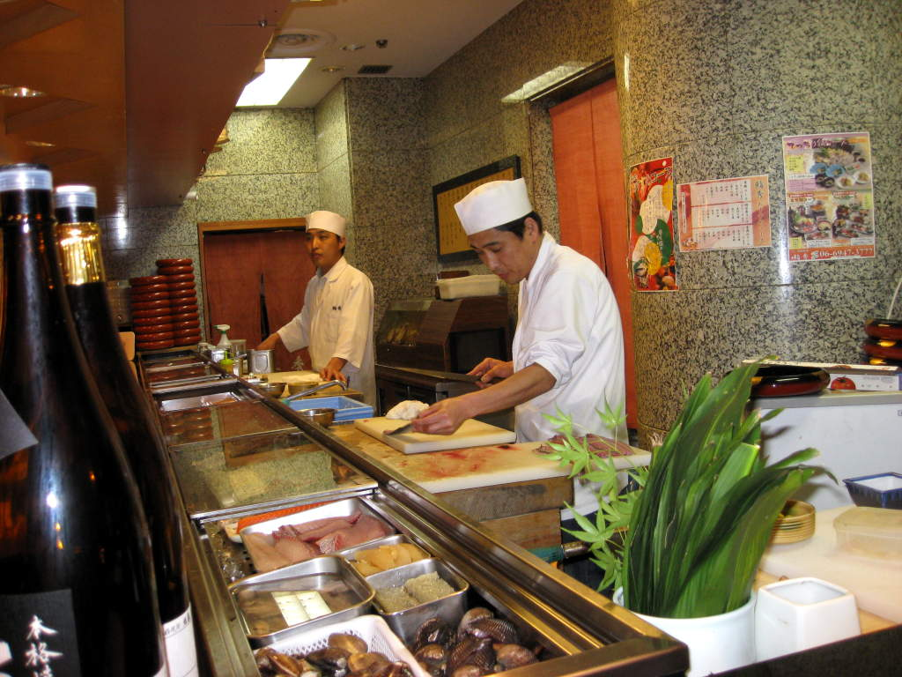

Osaka(links to sections of Osaka at bottom)
I
reached Osaka and found my friends still recovering from the Fuji
fiasco. They did some initial scouting around in Osaka while I
was in Nagoya. The main plan was to see a kendo practice in a
police station, and maybe also see Osaka castle. This man was an
unexpected surprise. You can see all his equipment here,
including the scary pink thing. He was theatrical and very
focused. We could not understand what he was shouting about (and
he shouted a lot), but we were convinced he was a good actor.
There
were lots of free concerts around Japan in general. This seemed
like a "Battle of the Bands" or something, because they were right next
to each other. When you stood in front of each band, 90% of what
you heard was their music, so it worked pretty well.
These groupies knew where to get the best view from.
We
had a pretty nice hotel room in Osaka. It was near a mall with
tons of retstaurants. Maybe 30-40. I took this shot from
one of the upper floors. You can see they were setting up for
something. You also can see how the mall was laid out. It
was a big open area surrounded by 4 floors on the perimeter.

We
chose this sushi bar, and it was a nice choice. This was our main
sake experience in Japan. We probably should have drank more
sake. Because everything required cash in Japan (it was rare for
credit cards to be accepted), we had to budget ourselves at least
somewhat. Here we had a large assortment of sushi and other
treats. We just kept ordering more plates of slimy stuff until we
were full. A Japanese couple sitting at the bar was surprised by
our affinity toward sake.
Trees
were lit up in blue lights outside our hotel, the New Otani Hotel.
The hotel presented us with a wonderful view of the Osaka castle
from our window. Charging 30 dollars for the pool was not
appreciated, however.
Sightseeing cruiseKendo practiceOsaka CastleBack